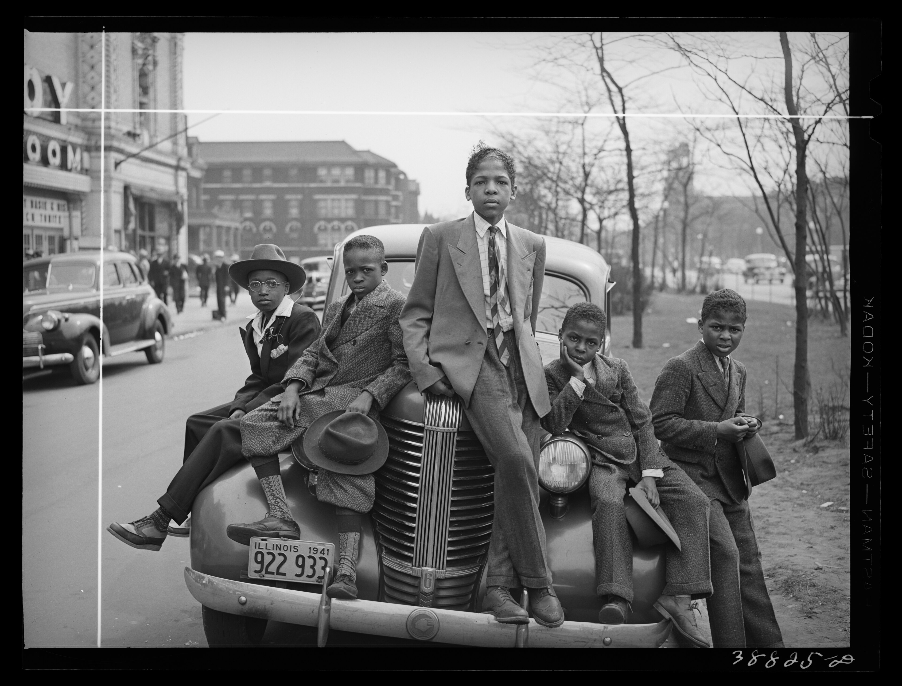

Directions: Work through the five stations in order. Each station holds one record from the groundwork years: a presidential committee's report, an executive order, a newspaper campaign, a pair of court decisions, and a migration record. For each record, name what it built: a law, an institution, a constituency, or a tactic. At the end, judge which piece of groundwork the later movement could least have done without.
Source: President's Committee on Civil Rights, To Secure These Rights, 1947 (Internet Archive scan of the 1947 printing), as carried in the audited TPSP record. Cuts are marked with ellipses.
... In a democracy, each individual must have freedom to choose his friends and to control the pattern of his personal and family life. But we see nothing inconsistent between this freedom and a recognition of the truth that democracy also means that in going to school, working, participating in the political process, serving in the armed forces, enjoying government services in such fields as health and recreation, making use of transportation and other public accommodation facilities, and living in specific communities and neighborhoods, distinctions of race, color, and creed have no place. ...
... A lynching in a rural American community is not a challenge to that community's conscience alone. The repercussions of such a crime are heard not only in the locality, or indeed only in our own nation. They echo from one end of the globe to the other, and the world looks to the American national government for both an explanation of how such a shocking event can occur in a civilized country and remedial action to prevent its recurrence. ...
The committee protects one kind of freedom and limits another claim made in its name. State both, in the passage's own terms: what may each individual choose, and where do distinctions of race have no place? Name at least four of the listed fields.
According to the second passage, a lynching is not a local matter. Who is said to be watching, and what does the passage say the world expects from the American national government?
Source: Harry S. Truman, Executive Order 9981, 1948 (Harry S. Truman Library), as carried in the audited TPSP record. Cuts are marked with ellipses.
... it is essential that there be maintained in the armed services of the United States the highest standards of democracy, with equality of treatment and opportunity for all those who serve in our country's defense ...
1. It is hereby declared to be the policy of the President that there shall be equality of treatment and opportunity for all persons in the armed services without regard to race, color, religion or national origin. This policy shall be put into effect as rapidly as possible, having due regard to the time required to effectuate any necessary changes without impairing efficiency or morale. ...
State the policy the order declares, word for word where it counts: equality of what, for whom, without regard to what?
The order carries its own brake. Quote the phrase that limits how fast the policy must move, and explain in one sentence what that phrase allowed officials who opposed the order to do.
Source: Teaching summary prepared for this lesson from the public record of the Pittsburgh Courier's Double V campaign, 1942. This station is a summary, not a transcription. The Courier's pages are a newspaper record of the period and are summarized here rather than reproduced.
In January 1942 James G. Thompson, a cafeteria worker in Wichita, Kansas, wrote to the Pittsburgh Courier, one of the largest Black newspapers in the country. He asked whether he should sacrifice his life to protect a country in which he could not vote freely, eat where he chose, or work at the job he was trained for, and he proposed that Black Americans adopt a double V: one V for victory over the enemy abroad, and a second V for victory over the enemies at home. The Courier printed the letter on January 31, 1942 and built a campaign on it, with a Double V emblem readers could display, songs, and club chapters. Black newspapers across the country took the campaign up. The federal government watched the Black press closely through the war, and officials pressed editors to soften it. The editors kept publishing. The campaign gave a name, two letters long, to the demand that a war for democracy abroad be matched by democracy at home.
What did each V stand for, and whose question started the campaign? Answer from the summary.
A newspaper cannot pass a law or command an army. What could the Courier's campaign build that a law could not? Answer in two sentences, using one detail from the summary.
Source: Smith v. Allwright, 321 U.S. 649 (1944), and Shelley v. Kraemer, 334 U.S. 1 (1948), opinions as published by the Legal Information Institute, Cornell Law School. Cuts are marked with ellipses.
Smith v. Allwright, on the Texas white primary: ... The United States is a constitutional democracy. Its organic law grants to all citizens a right to participate in the choice of elected officials without restriction by any state because of race. ... If the state requires a certain electoral procedure, prescribes a general election ballot made up of party nominees so chosen and limits the choice of the electorate in general elections for state offices, practically speaking, to those whose names appear on such a ballot, it endorses, adopts and enforces the discrimination against Negroes, practiced by a party entrusted by Texas law with the determination of the qualifications of participants in the primary. This is state action within the meaning of the Fifteenth Amendment. ...
Shelley v. Kraemer, on restrictive covenants: ... We hold that in granting judicial enforcement of the restrictive agreements in these cases, the States have denied petitioners the equal protection of the laws and that, therefore, the action of the state courts cannot stand. ...
In each case the discrimination was called private. State the Court's answer in Smith in one sentence, naming the amendment it rests on.
Shelley did not outlaw private agreements between homeowners. What exactly did it forbid, and whose action did the holding name as the problem?
Source: Teaching summary prepared for this lesson from United States Census Bureau population counts, with the photograph below from the Farm Security Administration record held by the Library of Congress. This station is a summary, not a transcription of one document.

Chicago's Black population, counted by the census, stood at about 44,000 in 1910, about 234,000 in 1940, and about 492,000 in 1950. The jump of the 1940s was the second wave of the Great Migration, drawn by war industry jobs and pushed by the mechanization of southern farming and by Jim Crow itself. Detroit, Cleveland, Los Angeles, and Oakland grew on the same pattern. The newcomers arrived in states where no registrar could lawfully turn them away from the ballot box, and they registered and voted in numbers the South had made impossible. By 1948 both national parties were writing platforms and sending speakers with those voters in mind, and the president who signed Executive Order 9981 had read the same census arithmetic as everyone else in Washington.
Use the Chicago counts. By about how much did the city's Black population grow between 1940 and 1950, and what pulled and pushed the move, according to the summary?
A migrant changed more than an address. Explain what a Black southerner who settled in Chicago gained politically that no court decision in this file could have given him in Mississippi.
Build the ledger from the five stations. For each record, name what it built: a law, an institution, a constituency, or a tactic. More than one entry can share a kind.
| Record | What it built | The evidence from the station |
|---|---|---|
| To Secure These Rights, 1947 | ||
| Executive Order 9981, 1948 | ||
| The Double V campaign, 1942 | ||
| Smith and Shelley, 1944 and 1948 | ||
| The second Great Migration |
Close the file with a verdict. Judge which one piece of groundwork the later movement could least have done without, and defend your choice against the strongest rival record in the file. Use evidence from at least two stations.
What may each individual choose, and where do distinctions have no place? Each individual must have freedom to choose his friends and to control the pattern of his personal and family life. Distinctions of race, color, and creed have no place in going to school, working, participating in the political process, serving in the armed forces, enjoying government services such as health and recreation, using transportation and other public accommodations, and living in specific communities and neighborhoods. Credit requires the private choice protected and at least four public fields named.
Who is watching a lynching, and what is expected? The world is watching. The passage says the repercussions echo from one end of the globe to the other, and that the world looks to the American national government for an explanation of how such an event can occur in a civilized country and for remedial action to prevent its recurrence. The argument turns a local crime into a federal responsibility and a foreign policy liability at once, which is the report's working logic throughout.
State the policy declared. Equality of treatment and opportunity for all persons in the armed services without regard to race, color, religion or national origin. The order's opening grounds the policy in democracy itself: the highest standards of democracy for all those who serve in the country's defense.
Quote the brake, and what it allowed. The policy shall be put into effect as rapidly as possible, having due regard to the time required to effectuate any necessary changes without impairing efficiency or morale. The qualifying language allowed service officials who opposed desegregation to plead efficiency and morale and to slow the work for years, until manpower pressure in the Korean War made integrated units a military necessity. Students should see both halves: the order stated an unqualified end and a qualified timetable.
What did each V stand for, and whose question started it? Victory over the enemy abroad, the Axis, and victory over the enemies at home, racism and disfranchisement in the United States. The campaign began with James G. Thompson's letter to the Pittsburgh Courier, printed January 31, 1942, asking whether he should give his life for a country that denied him its own freedoms.
What could a newspaper campaign build that a law could not? A shared language and a national constituency of readers who understood their local grievances as one common claim. The Double V emblem, songs, and chapters turned private resentment into organized identification across state lines, and the campaign stated the war's contradiction so compactly that officials in Washington felt obliged to answer it. A law can forbid an act; it cannot manufacture the public that demands the law.
State the Court's answer in Smith. A primary conducted under state law is state action within the meaning of the Fifteenth Amendment, so a state cannot escape the amendment by letting a party do the excluding; the Texas white primary fell. Thurgood Marshall argued the case for the NAACP.
What exactly did Shelley forbid? It forbade judicial enforcement of restrictive covenants by state courts. The private agreements themselves were not outlawed; the holding names the action of the state courts as the denial of equal protection under the Fourteenth Amendment. The distinction is the lesson: after Shelley a covenant could still be signed and honored voluntarily, but no court would evict a Black buyer under one.
How much growth, and what pulled and pushed? Chicago's Black population grew from about 234,000 in 1940 to about 492,000 in 1950, an increase of roughly 258,000 people, more than doubling in one decade. The pull was war industry employment in the North and West. The push was the mechanization of southern agriculture and Jim Crow itself. The 1910 figure, about 44,000, shows students that the 1940s wave stood on an earlier migration's shoulders.
What did the migrant gain politically? A usable ballot. In Chicago a Black citizen could register and vote without a registrar's discretionary literacy test, a poll tax barrier enforced against him, or the white primary deciding the real election in advance, and his vote was courted by both parties in a state whose electoral votes presidents needed. No decision in this file gave a Black Mississippian that standing at home, which is why the migration belongs in a file about political groundwork and not only in a file about jobs.
To Secure These Rights built a federal agenda: not a law itself, but the official statement, by a president's own committee, that lynching, disfranchisement, and segregation were national business, with legislation named. Executive Order 9981 built a law, an actual change in the rules of the largest federal institution, and the precedent that a president could move alone when Congress would not. The Double V campaign built a tactic and a constituency at once: a portable frame, two letters, that turned wartime service into a claim, carried by an institution, the Black press, that reached a national readership weekly. Smith and Shelley built law by litigation, removing the white primary and covenant enforcement and proving the courts could be moved by a staffed, funded legal program. The second Great Migration built a constituency: hundreds of thousands of voters in states where their ballots counted, whose existence changed what presidents calculated. Closing verdicts earn full credit when the piece chosen is defended against a named rival. The strongest cases are usually made for the NAACP's litigation program, because Brown stands directly on Smith's state action logic and on the staff that argued it, and for the migration, because every federal step in the file, the report, the party fight of 1948, and the order itself, was taken by politicians reading the new electoral map. A case for Executive Order 9981 can earn full credit if argued from institutional fact: the integrated military became the standing proof, visible to every serviceman, that integration worked.